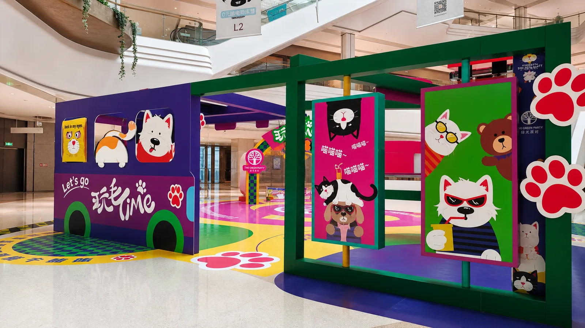
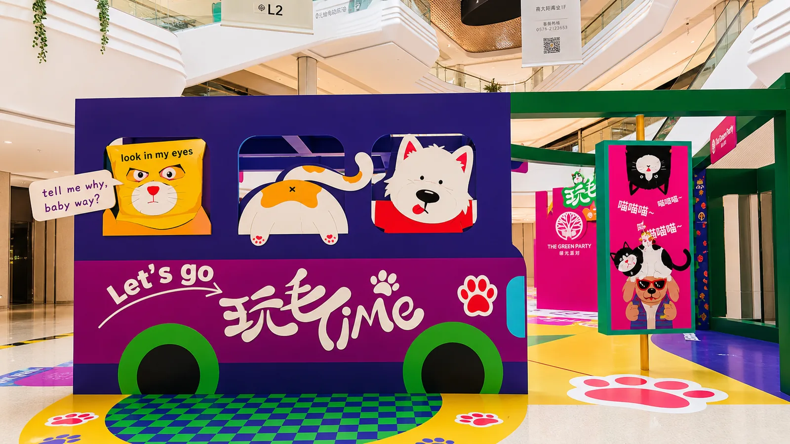
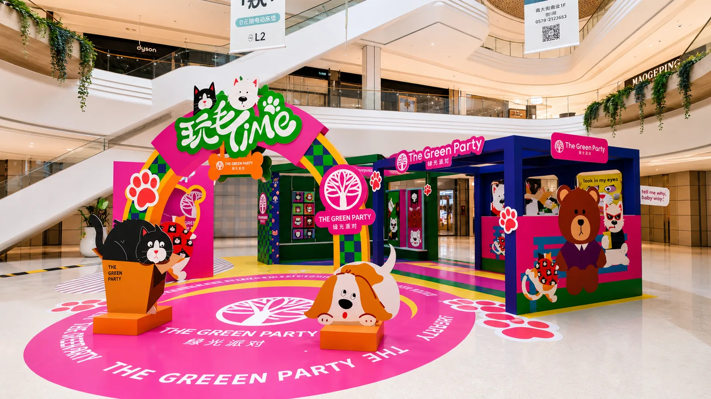
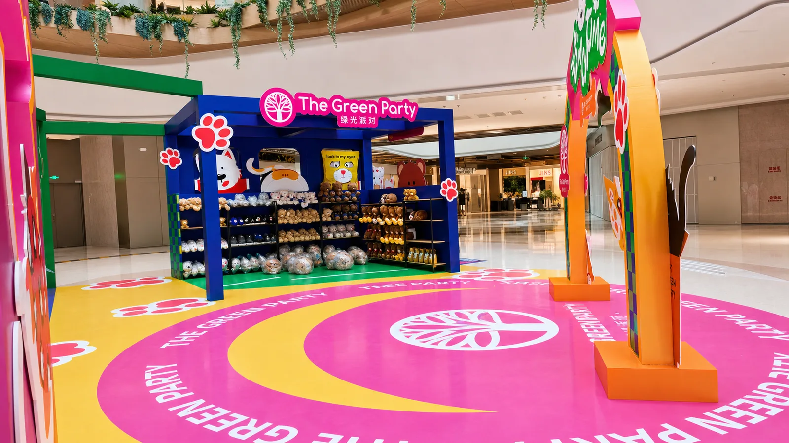

Case · Commercial Rendering
商业快闪空间效果图案例
项目围绕商场公共区域中的主题快闪场景展开，通过效果图提前呈现入口、互动区、陈列区、图形语言和人流关系。
需求与设计方案
空间需要具备鲜明主题、拍照传播属性和清晰浏览动线。方案使用高饱和色彩、连续地贴图形、模块化展台与角色化视觉元素，将不同功能区域组织成统一场景。
效果呈现与落地衔接
效果图重点确认整体气氛、画面比例、装置关系和顾客视角。进入制作阶段后，仍需依据现场测量结果拆分尺寸、结构、画面和安装节点，避免把效果图直接当作施工图。




本页为项目效果呈现图，服务于方案沟通；最终制作信息以现场复核和确认文件为准。
项目结果
效果图把分散的创意要求转化为可讨论的空间方案，为客户确认方向、预算判断和后续制作拆分提供统一依据。